Teardown of 20 Zack D Films shorts · measured 11 Nov 2026
Script, voice, sound, look, camera, transitions and captions, taken from 20 shorts with 0.2M to 19M views. Each rule is backed by a measurement or a frame you can see below.
01 · Script
Every narrated short starts speaking at 0.00 s with no greeting, no channel name and no "did you know". The title sets the topic ("Why Leatherback Turtles Cry"), so the first line can drop straight into the middle of the event: "The turtle cries as she lays her eggs…" To a viewer swiping in, it feels like they arrived mid-story and need to catch up.
Measured: in the 6 shorts that use "You see" / "See", it lands between 17% and 29% of the runtime. "But" appears 20 times across the 19 narrated shorts, usually once or twice, wherever the story needs a turn.
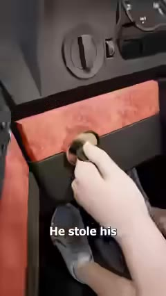
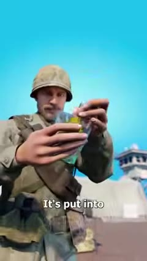
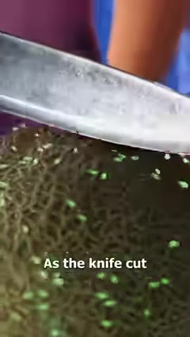
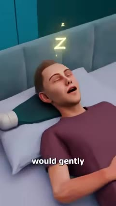
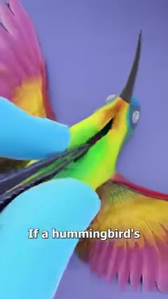
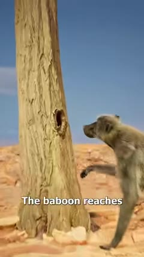
The median short ends 0.75 s after its last word. There is no outro, call to action or "follow for more". The final line is short and lands one of these payoffs:
| Payoff type | Last line (real examples) | Why it works |
|---|---|---|
| Ironic reversal | …and then he drove away in the SUV, stealing it again. | Flips the "good thief" story in the final two words. |
| Grim number | And after a few months, 33 people died from the bacteria. | Pays off the title's promise with a hard fact. |
| Absurd escalation | …spread it on toast, and the tastiest breakfast wins. | Comedy beat that makes people rewatch or share. |
| Callback twist | …assured the man again that he wouldn't tell a soul. | Repeats a line from the start with a new, darker meaning. |
| Moral reframe | It's trapped by what it refuses to release. And sometimes people are too. | Turns an animal fact into a lesson about the viewer. |
| Visual payoff, no words | Snare: narration stops 5.4 s early and the bird gets caught on screen. | The tutorial "proves" itself; works with no voice. |
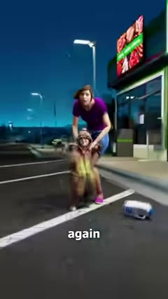
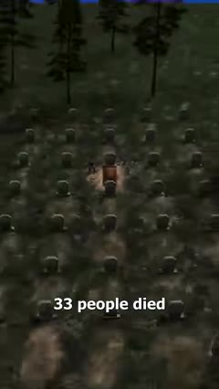
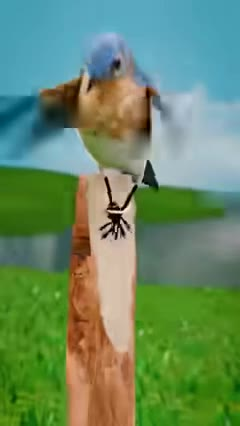
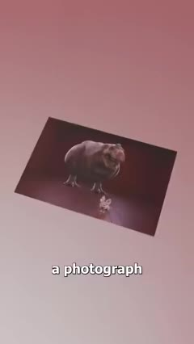
In 7 of 19 shorts the last line flows straight back into the first, so the replay feels like one continuous video and the view counts again:
Write the last line first, then write an opening that could follow it.
Most of the 40 recent titles use one of five frames; the rest plainly state the event ("A Tree Grew Around This Bicycle"). All 40 end with a single emoji, and 39 of those are faces that signal the emotion:
| Format | Count | Spine | Example |
|---|---|---|---|
| Mechanism | 5 | Weird behaviour → "You see" → body or physics reason → consequence | Why Leatherback Turtles Cry · 9.6M |
| True story | 5 | He/she did X → "But" → it went wrong → ironic or grim end | The Car Thief Who Came Back · 5.8M |
| Tutorial | 3 | Imperative steps in first-person view → result shown | How To Build A Matchbox Camera · 13M |
| Fiction / absurd product | 3 | Invention or ritual described deadpan → "But then" → disaster punchline | Making Butter With A Relay Baton · 9.8M |
| Parable | 2 | Animal or classroom demo → "And people…" → lesson | How Letting Go Can Set You Free · 8.4M |
| What-if / history | 2 | Impossible premise or banned object → step-by-step consequence | What If Humans Had Hummingbird Hearts · 19M |
02 · Voice and sound
The voice and music notes come from measurements (pitch tracking, level between words, spectrograms), not from listening. Confirm the music and SFX choices by ear on two or three of the reference videos before you lock a style.
03 · Look
Everything is 3D-rendered: slightly glossy, toy-like realism with soft global light, shallow depth of field and saturated colour. Science and explainer pieces sit in a bright cyan "studio void": a sky-blue gradient with a white glow behind the subject. Crime and fiction move to moody practical light: warm tungsten interiors and blue night exteriors.
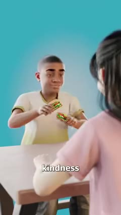
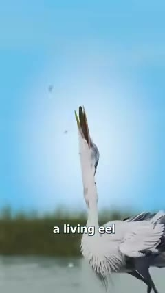
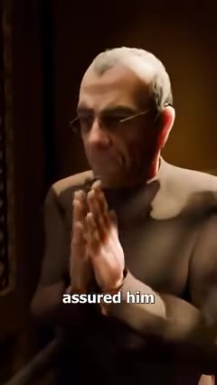
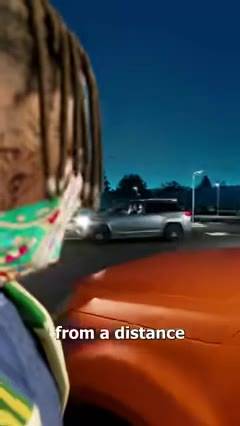
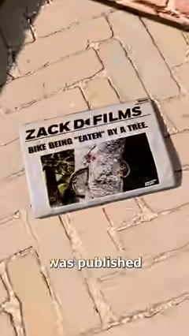
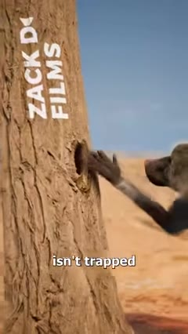
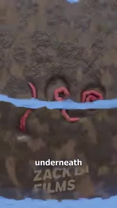
04 · Camera and transitions
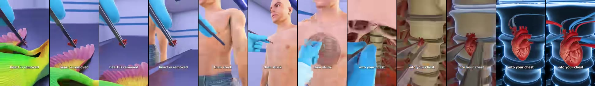
1. Follow-the-object fly-through. The camera tracks one object (a heart, a knife edge) and travels with it into a new scene or inside a body, so the shot change never feels like a cut. 2.4 s shown.
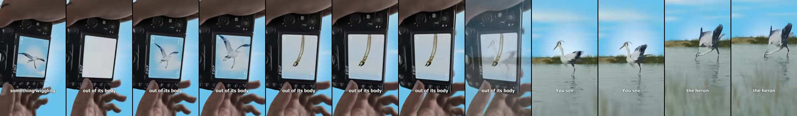
2. Screen-to-world dissolve. An image inside the scene (camera screen, thought bubble, photo) grows and dissolves into the full frame. Used on "You see" to enter the explanation.
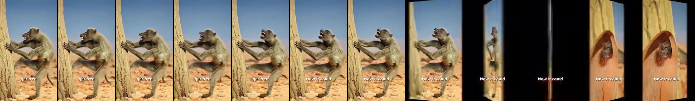
3. Card swing. The whole frame spins on its vertical axis against black in about 0.25 s. It marks a pivot or a "what if": "Now it could…", "The problem is…".
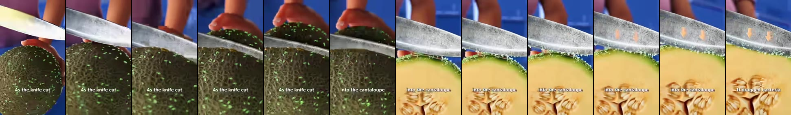
4. Push through the surface. Push in until the camera passes the skin, rind or wall and lands in a macro or cross-section of what's inside.
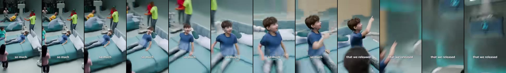
5. Crash zoom and whip. A fast push onto a face or reaction, then a blurred whip pan into the next scene. Used for jumps in time ("Now people loved it so much…").
05 · Visual devices
These devices turn an explanation into something you can watch. Use at least two per short.
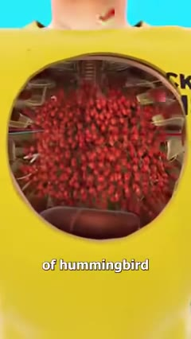
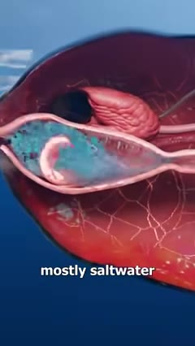
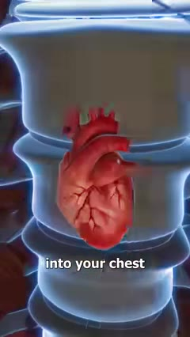
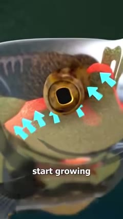
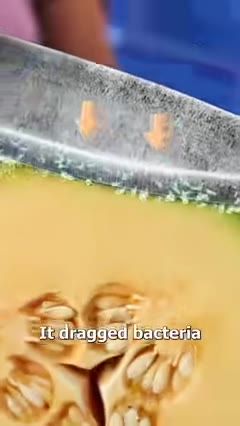
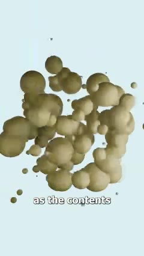
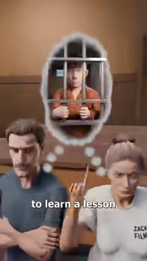
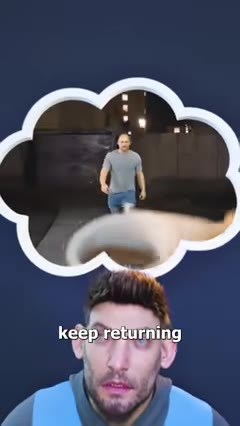
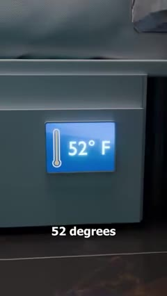
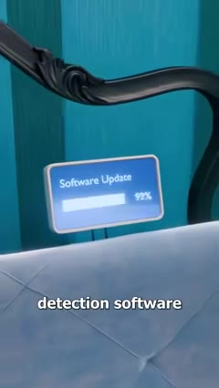
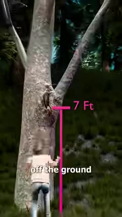
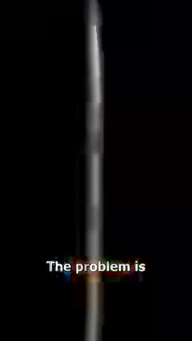
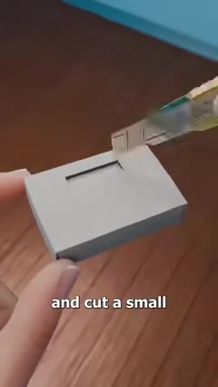
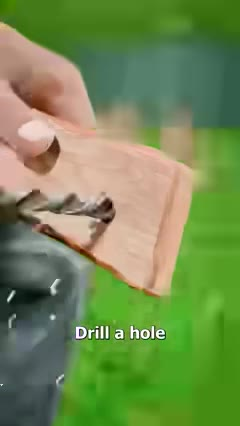
06 · Captions
The repo's tools/captions.py produces this style from your voiceover. Tested on the heron short, its captions landed on the same spot as the originals.
07 · Build one
A new topic written to the recipe, with a shot sheet you can hand to an animator. Title: Why Your Fingers Wrinkle In Water 🤔
Script · 102 words · about 34 s at 178 wpm
Your fingertips start to wrinkle after about five minutes in the bath, but it's not because they're soaking up water. You see, your nerves are actually telling the blood vessels under your skin to shrink, which pulls the skin down into those ridges. And people with damaged nerves in their fingers don't wrinkle at all. But scientists think the ridges work like tire treads, channeling water away so you can grip wet things. In one experiment, people with wrinkled fingers moved wet marbles faster than people with dry ones. Which means your body has been putting on rain tires this whole time.
The last line loops into the first: "…rain tires this whole time." → "Your fingertips start to wrinkle…". Check the facts against a source before publishing.
| Time | Line | Picture | Camera and transition | Device and sound |
|---|---|---|---|---|
| 0.0–2.5 | Your fingertips start to wrinkle… | Macro of a fingertip in bath water, ridges forming | Slow push-in and roll from frame one | Water lap foley; bed starts at full level |
| 2.5–5.0 | …after about five minutes in the bath | Character in a bath, cyan void walls | Pull out to medium | Wall clock jumps 5 minutes |
| 5.0–7.5 | but it's not because they're soaking up water | Water droplets bouncing off skin | Card swing in on "but" | Whoosh on the swing |
| 7.5–12.0 | You see, your nerves are… | X-ray hand: nerves glow, vessels in red | Push through the skin into the x-ray | X-ray glow; soft pulse SFX |
| 12.0–15.5 | …shrink, which pulls the skin down | Cross-section of fingertip, vessels contracting | Orbit around the cutaway | Cyan arrows pulling the skin |
| 15.5–19.0 | people with damaged nerves… don't wrinkle | Two hands side by side, one smooth | Lateral slide between hands | Smooth hand outlined red |
| 19.0–24.0 | But… like tire treads… | Fingertip morphs into a tire on a wet road | Match dissolve fingertip → tire | Water channels in glowing blue |
| 24.0–30.0 | In one experiment… wet marbles | Two people racing to move marbles between bowls | Crash zoom on the faster hand | Stopwatch prop; marble clicks |
| 30.0–34.4 | Which means… rain tires this whole time. | Hand with tiny tire tread, giving a thumbs-up | Push in, hard cut to black at 0.7 s after the last word | Deadpan read, audio ends with the picture |
tools/captions.py on the voice. The caption chunks are your cut list.Caption burn-in in this style:
python tools/captions.py voice.wav captions.ass ffmpeg -i render.mp4 -vf "ass=captions.ass" -c:a copy final.mp4
Score a finished short against these numbers:
python tools/check_short.py final.mp4
It reports first-word time, pace, end tail, loudness, median shot length and locked-shot share, marks each PASS or CHECK, and prints your first and last lines for the loop test.
08 · Before you publish